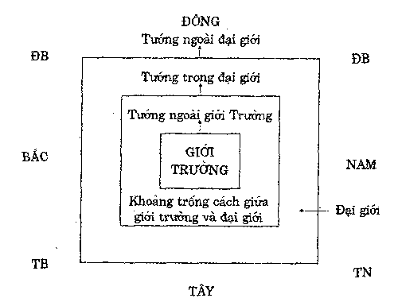

|
Cương Yếu Giới Luật Hòa thượng Thích Thiện Siêu |
|
BuddhaSasana Home Page |
Vietnamese, with Unicode Times font |
|
|
Cương Yếu Giới Luật Hòa thượng Thích Thiện Siêu |
|
[I.b] 24. Kiết tập Kinh và Luật. Khi đức Phật nhập diệt rồi, cuộc kiết tập mới bắt đầu. Cuộc kiết tập tụng lại Kinh tạng và Luật tạng. Trong Luật tạng, bộ Luật đầu tiên theo trong sử nhắc đến là bộ Bát thập tụng luật do Tôn giả Ưu-ba-li 80 lần ngồi tụng thì mới xong bộ Luật của Phật dạy. Nội dung của kiết tập có nghĩa như thế nào? Kiết tập: Phạn tự là Samgati, Trung Hoa dịch là Chúng đẳng tụng; nghĩa là cả chúng cùng nhau tụng lại lời đức Phật dạy. Tụng bằng cách nào? Tôn giả Ưu-ba-li hay Tôn giả A-nan-đà ngồi giữa chúng đọc rõ từng câu như: "Ngày hôm đó, tại chỗ đó, tôi có nghe đức Phật dạy như thế này, thế này... nếu đại chúng có vị nào nghe Ngài dạy khác, xin phát biểu; nếu không ai phát biểu, mà im lặng, thì cho qua". Tiếp tục tụng đoạn khác cũng y như trên cho đến hết, nên gọi là chúng đẳng tụng. Cuộc kiết tập đầu tiên chưa có văn tự gì hết. Kiết tập bằng miệng đọc lên rồi ai nấy đều ghi nhớ trong kí ức mà thôi. Kí ức của các vị toàn là các bậc A-la-hán thì ghê gớm lắm. Nhớ như vậy cốt để mà tu tập, chứ không có mục đích gì khác. 25. Tôn giả Ưu-ba-li tụng Luật. Như vậy, về Luật bộ, đầu tiên là Bát thập tụng do Tôn giả Ưu-ba-li tụng, rồi sau đó nó biến ra 5 bộ nữa: 1. Đàm-vô-đức bộ (Pháp tạng bộ) truyền luật Tứ phần, gồm 60 cuốn. 2. Tát-bà-đa bộ (Hữu bộ) truyền luật Thập tụng, có 60 cuốn. 3. Di-sa-tắc bộ truyền luật Ngũ phần, có 30 cuốn, thuộc (Hóa địa bộ). 4. Ca-diếp-di bộ truyền trì Giải thoát luật, gồm 50 cuốn, thuộc Căn bản nhất thiết hữu bộ. 5. Ma-ha Tăng-kỳ bộ truyền luật Tăng-kỳ; có 40 cuốn, thuộc Đại chúng bộ và Độc tử bộ. Trong thời Phật, Ngài không phân ra 5 bộ Luật như trên; nhưng trong quá trình hành hóa, tùy chỗ phạm lỗi mà Ngài chế ra giới để cho hàng đệ tử biết và lần sau đừng có phạm nữa. Đó là khởi nguyên của Luật. Sau khi đức Phật diệt độ, cuộc kiết tập lần thứ nhất chỉ tụng thuần nhất là 80 lần ngồi tụng mà thôi. Từ đó về sau, qua sự truyền trì của Tôn giả Đại Ca-diếp (Maha Kàsyapa), A-nan (Ànanda), Mạt-điền-địa (Madhyàntika), Thương-na-hòa-tu (Sànavàsa), Ưu-ba-cúc-đa (Upagupta) đều thuần nhất vị, chưa phân dị kiến về giới luật. Đến Tôn giả Ưu-ba-cúc-đa là vị thứ 5, nhằm khoảng thời gian sau Phật diệt độ 110 năm, lúc đó A-dục vương ra đời. A-dục vương là vị vua lúc đầu cai trị rất tàn ác nên dân chúng gán cho cái tên là Hắc A-dục vương (Vua A-dục đại ác). Nhưng về sau cải ác tùng thiện, quy y Tam bảo và trở thành một Phật tử thuần thành, hộ trì Phật pháp một cách đắc lực nhất, gọi là Pháp A-dục vương. 26. Nguyên nhân phân hóa Luật. Giáo pháp đức Phật do vậy cũng bị điêu linh các vị Tỳ-kheo mỗi đoàn du hóa một phương, không kết tụ với nhau được. Do đó mà từ nơi một bộ Bát thập tụng luật lại chia ra năm nơi năm nhóm. Năm nhóm này ghi nhớ và đọc tụng theo năm cách riêng và việc hành trì cũng khác, nên tạo ra năm bộ Luật khác nhau. Năm bộ Luật đó là do 5 đệ tử của Tôn giả Ưu-ba-cúc-đa nắm giữ và truyền tụng. Năm bộ Luật đó là: 1. Đàm-vô-đức
bộ truyền trì Tứ phần luật. Năm nhóm trên đều truyền trì Luật tạng riêng mà phát sinh thành ra 5 bộ như trên. Năm bộ Luật vừa nêu, về phần chính thì giống nhau, chỉ có sai khác về Ba-dật-đề và Chúng học pháp. 27. Năm bộ Luận giải thích Luật. Ngoài những bộ Luật chính ở trên, sau này có những bộ gọi là bộ Luận về Luật. Năm bộ Luận đó là gì? 1. Tì-ni mẫu luận, 8 quyển (thất lruyền). 2. Ma-đắc-lặc-già luận, gọi đủ là Tát-bà-đa-bộ Tì-ni Ma-đắc-lặc-già luận, 10 quyển, do Lưu Tống Tăng-già-bạt-ma dịch. 3. Hai bộ luận trên dựa vào Tát-bà-đa bộ, tức căn bản Nhất thiết hữu bộ mà giải thích những điều trong bộ Luật đó mà tạo ra Luận này. 4. Thiện Kiến luận, hay còn gọi là Thiện Kiến luật Tỳ-bà-sa, 18 quyển, do Tiêu Tề Tăng-già-bạt-ma dịch; cốt giải thích Tứ phần luật. 5. Tát-bà-đa luận hay còn gọi là Tát-bà-đa Tì-ni Tỳ-bà-sa, 9 quyển, mất tên người dịch, cốt giải thích Thập tụng luật. 6. Minh liễu luận, hay còn gọi là Luật nhị thập nhị minh liễu luận, 1 quyển, do Trần Chân Đế dịch, cốt giải thích giới luật thuộc Chính lượng bộ. Hai bộ này đều thuộc Chính lượng bộ, tức một trong 20 bộ phái Tiểu thừa Phật giáo. * Nội dung của Luận tạng: Khi nói Luật tạng là nói chung cả 5 bộ Luật, đó gọi là Luận tạng. Sự hành trì về Luật tại Ấn Độ chắc cũng có sự sai khác chút đỉnh. Khi thì các Tổ dùng bộ này, khi thì dùng bộ khác, nên đôi lúc tưởng chừng trong nội dung của nó có sai khác. Nhưng tùy theo địa phương và hoàn cảnh, các Tổ có thể du di phần Học pháp. Vì vậy, khi truyền qua Trung Hoa, Tổ Đạo Tuyên mới lấy một bộ làm căn bản cho việc truyền Luật, nên Tổ đã dùng bộ Tứ phần luật, phát triển thành Luật tông mà Tổ là vị khai sáng. Từ đó, Tứ phần luật được diễn giảng, giải thích và truyền bá rất mạnh. Việt Nam chúng ta từ trước tới nay cũng áp dụng Tứ phần luật để hành trì. 28. Nội dung Tứ phần luật. Tứ phần luật, 60 cuốn, do Diêu Tần Phật-đà da-xá và Trúc-phật-niệm cùng dịch, chia 4 phần: 1. Phần một, gồm 21 cuốn: Nội dung chuyên nói 250 giới của Tỳ-kheo. 2. Phần hai, gồm 16 cuốn: 9 cuốn đầu nói 348 giới điều của Tỳ-kheo-ni; 7 cuốn sau quy định việc thọ giới, thuyết giới, An cư, Tự tứ... 3. Phần ba, có 12 cuốn: gồm các chương quy định việc Tự tứ tiếp theo, Bì cách, y, dược, Casina y, việc xảy ra ở Câu-diệm-di, ở Chiêm-ba, kiết-ma Ha-trách, về người, về tội phú tàng, giá, phá Tăng, diệt tránh, về pháp Tì-ni và về Pháp. 4. Phần bốn, gồm 11 cuốn: là các chương nói về phòng xá, tạp, ngũ bách kiết tập, thất bách kiết tập, điều bộ Tì-ni, Tì-ni Tăng nhất. Tóm lại, Tứ phần luật gồm có 2 phần chính: a. Phần thứ nhất nói về giới bổn của Tỳ-kheo và Tỳ-kheo-ni. Giới bổn của Tỳ-kheo có 250 giới; Tỳ-kheo-ni có 348 giới. Theo Nam truyền Luật tạng, Tỳ-kheo có 227 điều, Tỳ-kheo-ni có 311 điều. Các giới điều tuy có khác, nhưng chỉ khác phần chi tiết, còn phần nội dung chính vẫn giống nhau. b. Phần thứ hai nói về 20 Kiền-độ (20 chương) : 1. Chương thọ giới: thuyết minh về việc thọ giới. 2. Chương thuyết giới: thuyết minh về nghi thức thuyết giới. 3. Chuơng An cư. thuyết minh về ý nghĩa và sự việc An cư. 4. Chương Tự tứ: nói về ý nghĩa tác pháp Tự tứ. 5. Chương bì cách: khai cho các Tỳ-kheo gặp hoàn cảnh đặc biệt được dùng các loại da thuộc. 6. Chương nói về y: thuyết minh cách may y và sử dụng nó. 7. Chương nói về dược liệu: thuyết minh về cách dùng thuốc để chữa bệnh. 8. Chưong nói về y Casina: nói về cách thọ y và xả y Casina (công đức y). 9. Chương nói về việc xảy ra ở Câu-diệm-di: nói về việc các Tỳ-kheo tranh cãi nhau, và 3 loại cử tội: 1. Bất kiến cử, là cử cái tội có lỗi mà nói không thấy, không nhận tội; 2. Bất sám cử: là cử cái tội đã nhận tội mà không chịu sám hối; 3. Ác kiến bất xả cử: là cử cái tội có ác kiến mà không chịu bỏ. 10. Chương nói về việc xảy ra ở Chiêm-ba: nói về các loại kiết-ma như pháp và phi pháp. 11. Chương nói về Ha-trách: nói việc chế định 7 thứ Ha-trách, tức 35 việc mà một Tỳ-kheo đã phạm tội thì không được làm. 12. Chương nói về người: thuyết minh phạm tội Tăng tàn, lục dạ biệt trú, phép bản nhật trị và cách sám trừ nghiệp quả, sám diệt phi pháp. 13. Chương phú tàng: nói các thứ tướng của tội phú tàng và cách diệt trừ tội. 14. Chương nói về giá: nói về cách ngăn ngừa và cử tội người khác, khi cử phải đủ 5 pháp là tri thời, chân thật, lợi ích, nhu nhuyến và từ tâm. 15. Chương phá Tăng: nói việc tội phá Tăng. 16. Chương diệt tránh: nói về Thất diệt tránh (7 phép diệt sự tranh cãi). 17. Chương nói về Ni: nói việc Ni chúng thọ giới, thuyết giới. 18. Chương nói về pháp: nói các oai nghi, pháp thức đi lại... của Tỳ-kheo. 19. Chương nói về phòng: nói việc sửa sang, tu bổ phòng xá. 20. Chương tạp: thuyết minh xen lẫn hết thảy các chương và cách trì giới. Đạo Tuy ên Luật sư trong "San bổ tùy cơ yết-ma" tóm tắt 20 chương thành 10 điều:1. Chương tập pháp: nói tổng quát về sự duyên thành, không thành của các pháp kiết-ma . 2. Chương kết và giải giới. 3. Chương nói pháp thọ các giới. 4. Chương nói áo, thuốc, thọ trì và thuyết tịnh. 5. Chương nói các pháp thuyết giới. 6. Chương nói về chúng An cư. 7. Chương nói về pháp Tự tứ. 8. Chương nói về chia áo (của Tăng đã chết). 9. Chương nói sám hối các tội. 10. Chương nói việc cốt yếu của vị Trú trì Phật pháp. 29. Chỉ trì, tác trì. Giới luật thì nhiều, nhưng không ngoài hai môn: chỉ trì và tác trì. a. Chỉ trì: Là đình chỉ, đình chỉ không làm các điều ác Tức quy định về điều giới, đó là giới, thuộc chỉ trì. b. Tác trì: Là tu thiện, tức là các điều thiện. Tức quy định về các pháp kiết-ma, đó là Luật, thuộc tác trì. Ví dụ: Thực hành giới bổn là chỉ trì; giữ gìn 20 kiền độ là tác trì. 30. Chuyện xảy ra ở Câu-diệm-di (Kosambiya). Đó l à chuyện cãi lộn nhau giữa hai thầy Tỳ-kheo. Kinh dạy rằng: Có 2 thầy Tỳ-kheo Thượng tọa Pháp sư và Luật sư. Thượng tọa Tỳ-kheo pháp sư thì giỏi về pháp như Tứ đế, Thập nhị nhân duyên, Bát chánh đạo... nhưng lại ít chuyên về luật. Trái lại, Thượng tọa Luật sư thì thông thạo, am hiểu về luật, rành mạch về luật như kiết giới, An cư, Tự tứ thì rất rành, nhưng khi hỏi về kinh thì cũng ít thông tuệ cho lắm. Cho nên mỗi Thượng tọa đều có sự thiên trọng khác nhau. Lẽ tất nhiên, Thượng tọa Luật sư chuyên giữ luật, nhất cử nhất động đều hành trì đúng luật; trái lại, Thượng tọa Pháp sư cũng giữ luật, nhưag không bằng vị Luật sư, mà chỉ chú trọng về Pháp là chính.Kinh dạy rằng: Hôm đó, Thượng tọa Pháp sư vào nhà tắm, xong việc quên đổ nước thừa trong chậu; vị Luật sư thấy vậy mới hỏi vị Pháp sư kia: tại sao tắm xong thầy để nước thừa trong chậu, như vậy là phạm tội Đột-kiết-la. Vị Pháp sư nói: thưa Tôn giả, tôi vô ý quá, tôi rất ân hận và xin sám hối. Câu chuyện tưởng vậy là yên, ai ngờ Thượng tọa Luật sư kia đem chuyện ấy nói lại với đệ tử của mình. Đệ tử lại nói với đám đệ tử khác, cứ thế mà đồn ầm lên thành lớn, làm náo động cả tinh xá. Đệ tử của Thượng tọa Pháp sư nghe tiếng đồn như vậy, chột tai quá, liền đi mách lại cho thầy mình hay. Vị Pháp sư nói với đệ tử là, thầy đã xin lỗi vị Thượng tọa ấy rồi, tại sao lại xảy ra chuyện ồn ào như thế này. Tự ái nổi lên, hai bên khẩu chiến bằng binh khí miệng lưỡi qua lại rất dữ. Bổn đạo cũng chia hai nhóm cứ thế làm náo động cả tinh xá. 31. Đức Phật ở ẩn trong rừng. Phật từ nơi xa về, thấy chuyện xảy ra: liền hỏi nguyên do, hai bên cứ bảo thủ. Phật dạy không nghe. Họ thưa với Ngài: Xin Thế Tôn, Ngài biết việc của Ngài, chúng con biết việc của chúng con. Can ngăn mãi không được nên Phật đành ôm bình bát một mình vào núi ở ẩn để an tĩnh. Trong khi đó, có một con voi già, nó cũng bị mấy con voi trẻ quậy phá ở không yên, nên đi tìm chỗ núp. Đi vào đó gặp Phật, hai bên gặp nhau, thấy bên nào cũng có hoàn cảnh y như nhau, nên cùng ở chung một chỗ. Cũng tại đó, có một con khỉ già cũng bị bọn khỉ trẻ ruồng bỏ, nên cũng tìm chỗ ẩn thân, đến đó gặp Phật. Như vậy, cùng ở với Phật có con voi già và khỉ già cùng hầu Phật. Mỗi sáng voi đi lấy nước về dâng Phật, khỉ đi lấy trái cây, mật ong về cúng Phật. Cho nên hiện nay, trong tranh truyện Phật giáo có hình ảnh voi và khỉ dâng đồ cúng Phật là để ghi lại chuyện đó. Trong thời gian Phật đi vắng, hàng cư sĩ đến hầu Phật, không thấy Ngài, bèn hỏi Ngài đi đâu vắng. Chúng Tỳ-kheo nói qua loa nên hàng cư sĩ tẩy chay và cấm vận lương thực...Cuối cùng bí quá, họ mới nói thật và họ cũng rất ân hận. Tóm lại, sau khi đã biết lỗi, tất cả cùng nhau hòa thuận và đi thỉnh Phật về. Đó là chuyện xảy ra ở Kosambi. 32. Phật dạy pháp Lục hòa ở Kosambiya. Tại Kosambiya, tinh xá Ghosita, các Tỳ-kheo ở đó đang sống cạnh tranh, luận tranh, đấu tranh nhau, đả thương nhau bằng binh khí miệng lưỡi. Các Tỳ-kheo ở đó không thông cảm nhau, không chấp nhận thông cảm, không tự hòa giải nhau, không chấp nhận hòa giải nhau nên đã bị đức Phật gọi đến la rầy (Trung bộ kinh, HT. Thích Minh Châu dịch, tập I, tr. 487) và dạy cho sáu pháp đưa đến an lạc: 1. Phải an trú từ thân hành cả trước mặt lẫn sau lưng. 2. Phải an trú từ khẩu hành. 3. Phải an trú từ ý hành. 4. Tài vật nhận được đúng pháp, cho đến thâu nhận từ trong bình bát phải san sẻ cho các vị đồng phạm hạnh. 5. Đối với các giới luật không có vi phạm, không tì vết, không vẩn đục, không uế tạp và giải thoát, được người trí tán thán, không bị chấp trước, đưa đến thiền định. Tỳ-kheo sống thành tựu trong các giới luật ấy với các vị đồng phạm hạnh cả trước mặt lẫn sau lưng và phải nhất trí với nhau. 6. Đối với các tri kiến thuộc về bậc thánh, có khả năng hướng thiện, khiến người thực hành chơn chánh, diệt tận khổ đau. Phải sống thành tựu tri kiến như vậy cùng các vị đồng phạm hạnh cả trước mặt lẫn sau lưng. Thực hành 6 pháp cần ghi nhớ, tạo thành tương ái, tạo thành tương kính sẽ đưa đến hòa đồng, đưa đến hòa thuận trong hòa hợp nhất trí. Như trong Luật ta thấy, Phật điều khiển chúng cũng như một cô giáo điều khiển lớp mẫu giáo. Nó ngộ nghĩnh lắm, thế nhưng, có một thầy Tỳ-kheo đi vệ sinh thở to quá, Phật cũng chế ra oai nghi (giới). Có một thầy khách Tăng đi đến một phòng chư Tăng, không gõ cửa báo cho chủ biết, xô cửa vào phòng. Bất đồ có một con rắn nằm trên trần nhà, nghe tiếng xô mạnh quá, nó rớt xuống nơi vai thầy. Thầy hoảng quá, la hét to quá làm động những người xung quanh. Xung quanh đến hỏi: Gì mà la hét to quá vậy? Vị Tỳ-kheo nói: Con rắn rớt trên vai tôi. Hỏi: Thầy ở phòng này sao không biết con rắn ở lrên trần? Thầy nói: Tôi ở phòng khác và mới tới đây. Câu chuyện bạch lên Phật, Phật dạy: Trưởc khi vô phòng người khác phải xin phép. Lại có trường hợp một Tỳ-kheo đi khất thực, tưởng chỗ nào cũng vào được hết. Khi thầy chăm chăm bước đến một phòng nữ nhân đang lõa thể nằm, thầy hoảng quá, quay lưng đâm đầu chạy. Bất đồ ông chồng từ ngoài ngõ đi vào, ông chặn lại hỏi và kéo thầy vào nhà. Vào nhà, thấy vợ đang nằm trần truồng, ông sinh nghi là chắc có chuyện phi pháp nên đập thầy một trận nhừ tử. Các vị thiểu dục tri túc nghe chuyện ấy, lấy làm bực mình về thưa với Phật. Phật chế giới rằng, đi khất thực phải nhìn xem hướng chợ là hướng ra sao, hướng nhà cửa là hướng ra sao, hướng phòng là hướng thế nào, chứ không phải chỗ nào cũng bước tới khất thực được hết, và phải đi từ hai thầy trở lên. 33. Phật cấm dùng thần thông để thu bát. Chương nói về tác sự: Sắm bát như thế nào? Loại bát gì được sắm, loại gì không được sắm? Bát gì được dùng, bát gì không được dùng? Nên sắm dao như thế nào để cắt đồ hằng ngày? Về chuyện bát này, Phật có quở một vị Tỳ-kheo hiện thần thông để lấy bát. Chuyện kể rằng, có một vị ngoại đạo treo cái bát trên cao, ra điều kiện: nếu ai hiện thần thông lấy được thì bát ấy thuộc về mình. Có một vị Tỳ-kheo dùng thần thông lấy bát về và bị Phật quở. Từ đó Ngài kiết giới cấm hiện thần thông để làm chuyện đó. Lại cũng chuyện khất thực: Một buổi nọ, một vị Tỳ-kheo đi vào nhà cư sĩ để khất thực, gặp nữ nhân. Nữ nhân thấy vị này tướng mạo oai nghi và đẹp trai nữa nên cô ta dùng thủ đoạn chiếm đoạt vị này. Cô nói là phải làm như cô bảo, nếu không cô sẽ lấy móng tay tự quào cho rách mặt rồi vu cho thầy có ý xâm phạm thân thể cô. Vị này khiếp quá và vùng bỏ chạy. Chạy ra đường gặp chồng cô trở về hỏi: Sao thầy chạy dữ vậy? Sinh nghi, liền mời thầy trở lại nhà. Vào nhà thấy vợ mặt máu me ruớm ra và nói: Thầy ấy vào nhà và đòi làm chuyện phi pháp, em không chịu nên bị thầy quào rách mặt. Nhìn lại thấy vị thầy có móng tay rất dài nên cũng sinh nghi, và cũng bị chồng cô ta cho một trận đòn nhớ đời. Nghe chuyện như vậy, các Tỳ-kheo về bạch Phật, Phật chế giới không được để móng tay dài... Chương nói về điều bộ là thuyết minh về các tội Thâu-lan-giá, Đột-kiết-la... Tôi nói đại khái như vậy để các thầy, cô biết rằng, khi đức Phật diệt độ rồi, kiết tập Tam tạng mới có một bộ Luật, đó là Bát thập tụng luật. Nhưng sau này, vì hoàn cảnh biến thiên, đệ tử của Phật từ Bát thập tụng luật đó mới xê dịch thêm bớt mà tạo ra 5 bộ Luật như hiện có. Nội dung 5 bộ Luật khác nhau là khác về chi tiết, chứ các phần chính đều giống nhau. Riêng Tứ phần luật, nội dung có 4 phần, nhưng 4 phần đó tóm tắt cũng chia ra hai phần mà thôi. Đó là phần giới chính của Tỳ-kheo và Tỳ-kheo-ni thọ và trì tụng; phần thứ hai là nói về 20 Kiền-độ như đã nói ở trước. 34. Phân tích giới bổn. Vì sao gọi là giới bổn? Đây là những giới bổn gốc, chính yếu của Luật tạng. Giới bổn của Tăng có 250, của Ni có 348 giới. Ngoài giới bổn, còn có phần Kiền-độ, dịch âm chữ Khandha, có nghĩa là nhóm, thiên, chương. Phân tích giới bổn gồm có 8 mục, 250 giới chia 5 thiên và 7 tụ. Năm thiên: 1. Ba-la-di có 4 giới. Bảy tụ: 1. Ba-la-di. Năm thiên là nương ở chỗ tội nặng nhẹ của tội quả. Bảy tụ là những loại tụ căn cứ ở tội chính và nguyên nhân của nó. Thâu-lan-giá là phương tiện tội, tức tội nhân của Ba-la-di và Tăng tàn. Ác tác là tội nhẹ thuộc về thân. Ác thuyết là tội nhẹ thuộc về khẩu. Đó l à chia theo Tiểu thừa giới. Riêng Phạm Võng giới, chia hai thiên và ba tụ:Hai thiên:
Ba tụ:
35. Giải thích 4 Ba-la-di. Bốn Ba-la-di: Ba-la-di, Phạn tự là Pàràjika, Trung Hoa dịch là khí -- bỏ vứt ra ngoài Tăng chúng. Tội Ba-la-di có 4, là 4 tội phạm vào thì coi như bị bỏ đi, vứt đi. Mắc 4 tội này coi như bỏ ra ngoài Tăng chúng, vì vậy gọi là khí (vứt bỏ). Phạm tội này gọi là bất cọng trú tức không được phép tham dự tất cả công việc của Tăng. Luận Du-già-sư-địa cho rằng, khi phạm 4 tội này gọi là tha thắng--tức khi phạm tội này thì bị ma thắng. Vì sao? Vì người tu sĩ ví như một chiến sĩ chiến đấu với 4 thứ ma: ma phiền não, ma ngũ ấm, ma chết, ma trời Họ đánh bằng khí giới gì? Họ chiến đấu bằng cách hành trì giới luật. Khi người tu sĩ không trì giới, không giữ giới thì thua bốn thứ ma đó, như vậy là ma thắng. Do đó, phạm bốn Ba-la-di cũng gọi là phạm tha thắng. (Tha là kẻ khác, thắng là hơn). Phạm tội để kẻ khác hơn gọi là tha thắng. Nếu phạm tội này thì ma hơn, còn phạm tội dưới tội đây thì còn giằng co, chưa phân thắng bại. 36. Giải thích 13 Tăng tàn. Mười ba Tăng tàn: Phạn tự là Sanghà-vasena, phiên âm là Tăng-già-bà-thi-sa, Trung Hoa dịch Tăng tàn. Tăng tàn có hai nghĩa: a. Nghĩa thứ nhất: Giới luật là tính mạng của Tăng. Khi phạm Ba-la-đi coi như chết hẳn. Còn nếu phạm Tăng tàn thì như một người chết mà chưa chết hẳn, mới hấp hối thôi; nếu cấp cứu kịp thời, gặp thầy hay thuốc tốt thì có thể cứu được. b. Nghĩa thứ hai: Phạm giới này nếu đủ 20 Tỳ-kheo hợp lại kiết-ma đúng pháp, cho họ sám hối thì có thể tiêu diệt được tội này, nên gọi là Tăng tàn. Trong Căn bản nhất thiết hữu bộ gọi là Chúng giáo. Chúng là chúng Tăng, giáo là giáo dục. Chúng giáo có nghĩa phải có 20 vị Tăng giáo đục cho, cho sám hối thì mới hết tội. 37. Giải thích 2 Bất định. Hai Bất định: Vì sao gọi là hai Bất định? Vì không dứt khoát tội đó là Ba-la-di hay Tăng tàn hay Ba-dật-đề. Nó có thể thành tội Ba-la-di hay tội Tăng tàn hoặc Ba-dật-đề theo lời trú tín Ưu-bà-di, là vị nữ cư sĩ có lòng tin thanh tịnh kiên cố, không nhất định nên gọi là Bất định. Hai tội này chỉ liên hệ giới bất dâm, chứ không liên hệ các giới khác. 38. Giải thích 30 Xả đọa. Ba mươi tội Xả đọa. Phạn tự là Nissagiya-pàcittiya, Ni-tát-kỳ Ba-dật-đề là phiên âm, Trung Hoa dịch là Xả đọa. Tội xả và tội đọa. Loại tội này là chỉ các Tỳ-kheo, đồ dùng đó mà khi phạm vào là trái phép thì phải đọa. Muốn sám hối tội đó thì phải ở giữa chúng hoặc đối một người mà xả đồ vật lấy dùng trái phép trước rồi sám tội sau. Nói cách khác, khi đề cập đến tội xả đọa là các vật sở hữu của Tỳ-kheo như y, bát, tọa cụ lại không làm thủ tục tác pháp thì phải làm phép xả vật, xả tội, chừa bỏ tâm lý chứa chấp, tàng trữ tài vật để khỏi đọa lạc. Nó gồm 30 giới, ai phạm, nên đưa các phẩm vật ấy ra giữa Tăng, từ bốn vị trở lên để xả và đối trước một vị Tỳ-kheo để nói tội và xin sám hối. 39. Giải thích 90 Ba-dật-đề. Ba-dật-đề (Pàcittiya), Trung Hoa dịch là đơn đọa. Nó liên quan đến các tội tiểu vọng ngữ, cố ý sát hại côn trùng, cùng với nữ nhân đi chung đường v.v... gồm có 90 đơn đọa là tội không dính dáng gì đến vật dụng hết. Phạm thì bị đọa thôi, không cần xả, nên gọi là đơn đọa. 40. Giải thích 4 hối quá pháp. Bốn hối quá pháp, Ba-la-đề Đề-xá-Ni (Pàtidesanniya), Trung Hoa dịch là Hướng bỉ hối. Phạm tội này chỉ hướng tới một Tỳ-kheo khác, nói rõ lỗi lầm đã phạm và xin sám hối. Tóm lại là tội nhỏ, có thể hối cải, người phạm có thể nói tội với một Tỳ-kheo khác mà xin sám hối. 41. Giải thích 100 học pháp. Một trăm học pháp. Phiên âm Phạn tự là Thức-xoa-ca-la-di (Sikkhà Karaniya), Trung Hoa dịch là Chúng học. Chúng học pháp là những pháp cần nên học. Như các sinh hoạt hằng ngày, các oai nghi nhỏ nhặt... Pháp này chủ yếu là tự trách lấy mình. Đây là tội nhỏ nhặt, tội khó giữ nhưng hết sức dễ phạm. Khi biết phạm thì tự trách lấy mình để ăn năn, tự hứa lần sau không tái phạm là đủ. 42. Giải thích 7 Diệt tránh. Bảy Diệt tránh pháp, tiếng Phạn là Adhikaramásama-thàdharmàh, Trung Hoa dịch là Diệt tránh pháp. Tức bảy phương pháp trị tội hay bảy cách thức để chấm dứt sự tranh cãi giữa chúng Tăng. Phạm 100 học pháp và bảy Diệt tránh kết vào tội Đột-kiết-la, chỉ tâm niệm sám hối, học tập là đủ Riêng về Tỳ-kheo-ni, Phật ưu đãi hơn: 1. Ba-la-di không phải bốn, mà là tám. Cộng tất cả là 348 giới. Chưa hết, Ngài còn trao thọ mạng Phật pháp cho Ni nữa. Đặc biệt là Ni có 8 kỉnh pháp, nhưng Tăng thì có nhị bất định, còn Ni thì không. Như vậy, Ni hơn 8, Tăng hơn 2. Ni thì có ngũ thiên lục tụ. 43. Tánh giới và già giới. Vì sao gọi là tánh giới và vì sao gọi là già giới? Chữ này trong kinh Niết-bàn có cắt nghĩa khá rõ. Những việc đó tự tánh nó là tội. Thí dụ, nói láo là tội nặng. Luân lý thế gian còn không chấp nhận việc nói dối, dầu rằng trong thiên hạ không ai là không có nói láo. Khi dạy luân lý, người ta khuyên không nên nói láo. Vì sao? Vì nói láo là có tội, tự tánh nó là vậy. Có luân lý nước nào dạy nên ăn trộm đâu, mặc dầu trong xã hội đó ăn trộm tràn lan, vì ăn trộm nó thuộc về tánh tội. Cái mà bản tính nó là tội, thì dầu tu hay không tu, xuất gia hay tại gia, người người đều cho là có tội, cho nên gọi là tánh tội. Tuy nhiên, khác với thiên hạ là, một người tu sĩ khi đã phát nguyện trước đức Phật xin giữ giới đó, nếu vị đó phạm thì có tội phạm giới, còn đối với người không phát nguyện thì gọi là phạm tội chứ không phạm giới. Còn nếu họ ăn cắp, nói láo, bất quá là phạm luật pháp thế gian mà thôi. Giết người có ai chấp nhận không? Thế gian hoặc xuất thế gian cũng đều cho đó là tội ác; còn biện minh cách này cách khác, thì đó cũng chẳng qua một cách chạy bớt tội mà thôi. Cơ bản, giết người là có tội, nên gọi là tánh tội. Già tội có hai nghĩa: a. Ngăn sự cơ hiềm của thế gian; b. Ngăn sự phạm trọng giới. a. Thế nào là ngăn sự cơ hiềm của thế gian? Thí dụ, làm một tu sĩ mà ở trần đi qua đi lại ngoài đường chắc chắn bị thế gian chê cười, mặc dầu không ăn cắp, không ăn trộm, không nói láo. Cho nên đã làm tu sĩ thì phải ăn mặc nghiêm chỉnh, đi đứng ngay thẳng, ăn nói chững chạc và dịu dàng để ngăn sự cơ hiềm của thế gian. b. Thế nào là ngăn sự phạm trọng giới? Thí dụ: uống rượu không phải là phạm tánh tội, song khi có rượu vào dễ làm cho loạn trí, kích thích phạm các trọng tội. Vậy, ngăn sự uống rượu là một cách ngăn sự phạm trọng tội. 44. Các yếu tố kết thành tội. Mỗi loại tội, muốn kết nó là tội phạm thì phải có các yếu tố tạo thành. Thí dụ tội sát sinh, phải có đủ 5 yếu tố mới thành tội: 1. Đó là một vị Tăng
hay Ni, giữ giới đủ, chưa xả giới. Đủ năm yếu tố mới kết thành tội Ba-la-di về sát sinh. Giả sử trong đó đủ bốn yếu tố, còn một yếu tố không đúng, thí dụ người mà tưởng là phi nhơn, thì chỉ mắc tội thượng phẩm độc đầu Thâu-lan-giá, chứ không kết vào tội Ba-la-di. Tội đại vọng ngữ: muốn kết tội này trước hết đó là Tỳ-kheo như pháp, còn Tỳ-kheo không như pháp thì không thành tội đại vọng ngữ. Người không có pháp Tỳ-kheo thì dù họ có nói tôi bay lên trời hay chui xuống đất, có xưng gì đi chăng nữa thì cũng không mắc tội đại vọng ngữ. Nhưng nếu Tăng, Ni có thọ giới Tỳ-kheo, Tỳ-kheo-ni mà nói thì mắc tội đại vọng ngữ. Thứ hai, đối với đối tượng mình nói, họ phải hiểu, nếu không hiểu thì cũng không kết tội được. Thí dụ: mình nói với người khác, mình chứng A-la-hán rồi, nhưng họ không biết A-la-hán là gì thì cũng không kết tội mình đại vọng ngữ được. Các giới khác cũng phải đủ các yếu tố mới thành tội chứ không riêng hai giới này mà thôi. Trong các tội trên vừa nêu, tội Ba-la-di là bất khả cứu, nặng lắm rồi, như bịnh ung thư giai đoạn cuối cùng đang chờ đợi tử thần. Còn tội Ba-dật-đề, Đề-xá-Ni, Chúng học pháp, xem như bịnh đau đầu sổ mũi, không có gì phải nguy cấp cả. Chỉ có tội Tăng tàn hơi dây dưa một chút, nó đang nằm giữa làn ranh sống và chết. Phạm tội này có tính chất phức tạp. Phạm Tăng tàn, trong mười ba giới thì có bảy giới là đơn độc phạm, còn sáu giới kia thì phải có chúng Tăng tham dự. Ví dụ: tội Tăng tàn thứ sáu, vô chủ tự vị kỷ tác ốc. Nghĩa là không có vị thí chủ nào làm nhà cho mà tự mình làm lấy thì phải trình với chúng Tăng để Tăng chỉ chỗ cho mà làm. Nếu không trình mà làm quá lượng thì phạm Tăng tàn, vì có liên hệ người khác, chứ không đơn độc làm là phạm liền. Trường hợp trên nếu không có chúng Tăng mà ở đơn độc một mình thì không phạm. Nếu có Tăng chỉ chỗ mà mình làm quá lượng thì mới phạm. Trường hợp không có Tăng nào chỉ chỗ mà làm thì không phạm. Cho nên có liên hệ với người khác. Hoặc tội thứ bảy: Hữu chủ vị kỷ tác. Nghĩa là có thí chủ làm cho mình nhưng mình cũng phải nhờ Tăng chỉ chỗ vô nạn xứ, vô phòng xứ, nếu không nhờ Tăng chỉ chỗ vô nạn xứ, vô phòng xứ mà cứ tự ý làm thì phạm Tăng tàn. Vì nó có liên hệ với người khác. Còn bốn tội Tăng tàn khác là tội thứ mười, mười một, mười hai, mười ba thì phải qua ba lần Tăng kiết-ma can gián. Nếu làm mà chưa có can gián thì không phạm. Nếu mới can gián một lần. hai lần mà bỏ thì phạm Thâu-lan-giá, chứ chưa thành tội Tăng tàn thật sự. Đó cũng có liên hệ người khác. Nếu không ai can gián mà làm thì phạm tội Thâu-lan-giá thôi. Còn khi phạm thì xử trị khác. Nếu như không che dấu mà tự phát lộ ra thì bị hành lục dạ Ma-na-đỏa. Nghĩa là sáu đêm làm một hạnh khiêm cung là hạ mình xuống để phục vụ các vị thanh tịnh Tăng khác, tự mình hoan hỷ làm chuyện đó và làm như vậy để chúng Tăng hoan hỷ, gọi là duyệt ý, ý hỷ, nên gọi lục dạ Ma-na-đỏa là lục dạ ý hỷ. Theo kiết-ma cũng gọi là hạ ý kiết-ma hay là chiết phục kiết-ma chứ không phải là kiết-ma vĩnh tấn (mặc tẩn). Đó là tự phát lộ chứ không che dấu, không phú tàng. Còn trường hợp phú tàng, phạm Tăng tàn mà che dấu, thì tùy theo số ngày phú tàng mà phạt biệt trú. Nếu che dấu tội Tăng tàn hai ngày thì phạt hai ngày biệt trú, ba ngày, bốn ngày... thì phạt ba và bốn ngày biệt trú... Tóm lại che bao nhiêu ngày phạt bấy nhiêu ngày. Trong khi biệt trú không được làm 35 việc là không được thọ giới cho người, không được làm y chỉ cho người... nếu biệt trú nửa chừng mà phạm lại thì bắt biệt trú lại từ đầu, gọi là bổn nhật trị. Trường hợp phá hòa hợp Tăng. Khi có người phá hòa hợp Tăng thì các vị Tỳ-kheo cũ, hay các vị Tỳ-kheo khuyên can bỏ, nếu khuyên can không bỏ thì đưa ra giữa chúng ba lần kiết-ma, ba lần can. Nếu mới tác bạch một cho tới hai lần mà bỏ thì phạm Thâu-lan-giá, đủ ba lần can mà không bỏ thì phạm Tăng tàn. Người bạn đảng với người phá hòa hợp Tăng cũng ba lần can gián như vậy mà không bỏ mới phạm Tăng làn. Người hành Ô tha gia hành ác hạnh, đã ba lần can gián mà không bỏ mới phạm Tăng tàn; hoặc ác tánh bất thọ nhân ngữ, khuyên mấy cũng không nghe, thì đưa ra giữa chúng Tăng, ba lần kiết-ma can gián mà không nghe mới phạm Tăng tàn. Như vậy, bốn tội này là có liên hệ với chúng mới phạm. Tóm lại, trong trường hợp ba tội Tăng tàn, sáu tội có liên hệ với người khác mới thành tội, còn nếu không liên hệ thì không thành tội. Thí dụ: như phạm Tăng tàn mà không có ai can gián thì chỉ phạm Thâu-lan-giá mà thôi. Phạm Thâu-lan-giá thì chỉ đối trước bốn người sám hối, ba người hay hai người tùy theo tội nặng nhẹ. Nó không dứt khoát phải đủ 20 Tăng thì mới sám hối được. Trường hợp tìm ra 20 Sư họp lại cũng khó, lẽ tất nhiên Sư phải đàng hoàng, còn Sư bị Tăng tàn không sám cũng không sao. Trong Luật cũng có mặt sám hối khác không cần phải đủ 20. 45. Sáu trường hợp đặc biệt đối thủ sám tội Tăng tàn. Luật Căn bổn Tát-bà-đa bộ Luật Nhiếp quyển 4 có nói rằng: Có sáu hạng người phạm tội Chúng giáo (tội Tăng tàn) có thể đối với một Tỳ-kheo mà nói lên tội của mình thì được thanh tịnh. Điều này đặc biệt, lâu nay ít nghe. Sáu hạng người đó là ai? 1. Là người thông hiểu Kinh tạng. Nếu ba hạng người này rủi có phạm Tăng tàn thì có thể du di một chút, chứ họ thấu hiểu Kinh, Luật, Luận đâu phải hạng tầm thường. Xét ra, họ cũng có sự tu hành kiên trì, chí nguyện cũng cao cả như thế nào mới thông thạo Kinh, Luật, Luận như vậy chứ, còn nếu biếng nhác, ăn chơi thì thông hiểu Kinh, Luật, Luận sao được. Thành thử với hạng này không thể bắt phải trước hai mươi Sư để xin sám hối (nên nhớ kết tội thì có thể bốn người mà xuất tội Tăng tàn thì phải đủ hai mươi). Họ chỉ cần đối trước một vị Sư thanh tịnh nói tội của mình ra thì được thanh tịnh. 4. Là hạng người có biết tính hỗ thẹn, biết tàm quí, không phải ù lì, ương ngạnh, có tội mà dương dương tự đắc. Hạng người này có tội là xấu hỗ lắm, nên khi phạm tội Tăng tàn cũng không buộc trước hai mươi Sư xuất tội mà có thể một vị Sư thanh tịnh sám hối, nói lên tội của mình là thanh tịnh. Chúng ta biết hạng người biết xấu hỗ nếu khi họ biết lỗỉ của họ bị đem ra nói giữa chúng Tăng đông đảo như vậy, họ xấu hỗ có thể tự tử, bỏ giới hạnh thôi tu ngay. 5. Là hạng Thượng tọa Trưởng lão (Trưởng lão trong chúng). Ở trong chúng mà có một vị Trưởng lão lớn nhất thì tất nhiên vị này cũng đã dày công tu học như thế nào, mới được tôn xưng là Trưởng lão. Còn ăn rồi đi chơi rong thì ai tôn lên Thượng tọa Trương lão? Như vậy nếu có lỡ phạm Tăng tàn thì có thể đối với một vị Tăng thanh tịnh sám hối thì hết tội. Chứ còn một vị Thượng tọa Trưởng lão trong Chúng đem ra giữa Chúng, mà Chúng đều là hạ tọa là đệ tử, mặc dầu không phạm Tăng tàn mà xin sám hối với hạ tọa, sám sao được. Việc này trong luật cũng có châm chước, có công có tội cũng phải cân nhắc, chứ làm ông Thượng tọa Trưởng lão tu cũng bạc đầu, và phải có trình độ mới tới mức đó, lỡ có phạm đem ra xử cũng khó, vả lại chúng Tăng còn nương nhờ nơi ông nhiều chuyện lắm. 6. Là hạng người đại phước đức. Đức Phật có nói rằng: Có trường hợp lấy một nắm muối bỏ vô trong chén nước, chén nước mặn uống không được. Truờng hợp đó y như trường hợp người có ít việc thiện quá, bây giờ họ làm một việc ác thì hẳn cũng lây ác luôn, như nước mặn uống không được. Nhưng cũng có trường hợp lấy một nắm muối bỏ lrong một cái bể nước, hồ nước hay biển nuớc, nước đó vẫn uống được. Trường hợp người đại phước đức cũng y như thế, y như biển nước đó. Bây giờ lỡ có phạm Tăng tàn như bỏ một nắm muối, nó cũng không làm cho biển nước đó uống không được, mà vẫn dùng được như thường. Đại để, nó có ý nghĩa như thế. 46. Sáu trường hợp sám diệt tội Tăng tàn. Lại có một bổn khác trong Hành Sự Sao quyển hạ, nói ý hơi khác một chút. Cũng nói có 6 hạng người phạm Tăng tàn có thể tâm niệm sám (bên Căn Bổn Tát-bà-đa bộ thì đối thủ sám) của Đạo Tuyên luật sư, Tổ sáng lập Luật tông viết. 1. Hạng Thượng tọa phạm Tăng tàn. Khi thấy như thế các người khác sinh tâm kiêu mạn, tức họ cũng có lỗi, cũng mất nhờ, cho nên đức Phật nói: nếu Thượng tọa đó nhất tâm sinh niệm sám hối thì được thanh tịnh 2. Hạng Thượng Tọa mà cả Tăng, tục thiện hữu đa số điều biết tiếng tăm. Đối với hạng này nếu có phạm Tăng tàn cũng không xử như người khác, đem ra giữa chúng Tăng đủ hai mươi Tăng xuất tội, mà họ có thể tâm niệm sám thì được thanh tịnh. 3. Hạng đa tàm quý. Là hạng người mà động tịnh gì là biết tàm quý, nếu đem ra giữa chúng Tăng đông đủ hai mươi Tăng xuất tội họ mắc cỡ có thể xả giới bỏ tu, hay có thể xấu hỗ chết đi thôi vì họ nhạy cảm. Nếu họ tâm niệm sám thì được thanh tịnh. 4. Là hạng người bịnh quá nặng, giữ không được, không đủ sức mà sám hối... 5. Là hạng người ở trú xứ một mình mà phạm Tăng tàn, không đủ 20 vị Tỳ-kheo thanh tịnh để cầu sám hối, mà đi qua xứ khác thì gặp giặc, bị giặc hại mà chết, tự nhiên mọi sự đều hết, nên họ có thể tâm niệm sám. 6. Là ở trong chúng Tăng của mình đang ở, không có ai thanh tịnh hết. Vị này biết lỗi, đi qua xứ khác tìm các vị Tăng thanh tịnh để xin sám hối, nhưng lo đi giữa đường bị giặc giết chết, sự việc cũng hết. Sáu hạng này, đức Phật nói nhất tâm sinh niệm như pháp sám hối thì người đó được thanh tịnh, khi chết được sinh Thiên thượng. 47. Sám hối tội Ba-la-di và Tăng tàn. Chúng của Phật có chúng 20 người, có chúng 10 người, có chúng 4 người, có chúng 3 người, có chúng 1 người và tự tâm sám. Chúng 10 là chúng khi thọ Đại giới. Trong giới của Phật chế, thì tội Ba-la-di là tội nặng nhất. Muốn sám hối thì phải sám với 20 người. Nhưng nói tội Ba-la-di mà sám hối với chúng 20 người được sao? Vì Ba-la-di là tội bất khả sám. Nhưng khi nói sám với 20 người là trường hợp người phạm biết ăn năn hối hận, nếu bắt tội không cho sám thì họ có thể buồn nản và tự tử. Họ thương chiếc áo Ca-sa, ưa đời sống tu sĩ quá, vì vậy khi phạm họ cũng rất ăn năn hối hận. Trường hợp này luật cũng cho phép họ học pháp Ba-la-di. Người muốn học pháp Ba-la-di cũng đối trước chúng Tăng 20 người để xin phép và chúng Tăng 20 người kiết-ma cho phép học pháp Ba-la-di. Khi được phép rồi vẫn không được tham dự Tăng sự, chỉ được giữ hình thức tu sĩ ở trong chùa. Trường hợp sám với 20 người là trường hợp này, nên chỉ dành cho Tăng chứ Ni không có chuyện sám này. Muốn sám hối lội Tăng tàn thì sám hối với ai? Tăng phạm tội Tăng tàn, nếu không che dấu thì trong sáu đêm hành Ma-na-đỏa, phải sám hối trước Tăng 4 vị trở lên. Còn Ni thì trong 15 hôm hành Ma-na-đỏa, phải sám hối trước hai bộ Tăng, mỗi bộ 4 vị trở lên. Khi tác pháp xuất tội, thì phải đủ 20 vị Tăng xuất tội cho Tăng, và 20 Tăng, và 20 Ni xuất tội cho Ni. Nếu thiếu thì tội Tăng tàn không hết. 48. Sám hối tội Thâu-lan-giá. Muốn sám hối tội Thâu-lan-giá thì sám với ai? Tùy theo thượng phẩm, trung phẩm, hạ phẩm Thâu-lan-giá mà sám. Thượng phẩm sám với 20 người, trung phẩm sám với 4 người, hạ phẩm sám với 3 người. Tội này thì sám hối được. 49. Sám hối tội Ba-dật-đề -- Đề-xá-Ni -- Đột-kiết-la. Sám hối tội Ba-dật-đề thì trước một người, Đề-xá-ni cũng vậy. Còn tội Đột kiết la sám hối với ai? Không sám hối với ai hết, mà khi xảy ra, mình tự trách lấy lòng mình thôi. Thí dụ, khi mình làm điều gì đó biết là sai, nghĩ rằng: Tôi ăn năn quá, bậy quá, mình làm điều đó sai quá, sau này không nên làm nữa. Thế là hết tội. Muốn sám hối thì phải tìm vị Tỳ-kheo nào không có tội mà sám, còn tìm những vị có tội mà sám thì cá mè một lứa, coi như huề, không sám chi hết. Tăng, Ni là chúng xuất gia, Ni có nhiều giới hơn. Cho nên có những giới Ni, Tăng đồng nhau, nhưng cũng có những giới Ni, Tăng khác nhau. Phạm cũng như thế. Trong giới sát, đạo, dâm, vọng, Tỳ-kheo, Tỳ-kheo-ni phạm thì ghép vào tội Ba-la-di, còn Sa-di, Sa-di-ni phạm thì tội Đột kiết la, đuổi ra khỏi chùa mà thôi. Vì Sa-di, Sa-di-ni không cùng cọng trú kiết giới, cho nên có phạm cũng không gọi là phạm tội bất cọng trú, chỉ không cho thọ giới tiếp mà thôi. 50. Mười tám việc đưa đến phá hòa hợp Tăng. Trong Học pháp có một giới cần phải nhận định rõ, là giới phá hòa hợp Tăng. Tăng từ 4 vị trở lên, không biệt chúng mà đồng một kiết-ma, đồng thuyết một giới, gọi là Tăng hòa hợp. Có 18 việc dẫn đến sự phá Tăng hòa hợp: 1. Pháp nói là phi pháp (như Tám thánh đạo là con đường duy nhất đưa đến Niết-bàn, lại cho không phải hoặc không duy nhất). 2. Phi pháp nói là pháp (trái với trên). 3. Luật nói là phi Luật (Tám thánh đạo là nền tảng của Luật, lại nói là không phải. Hoặc bốn Thánh chủng là Luật, lại cho là không phải Luật). 4. Phi Luật nói là Luật (trái với trên). 5. Phạm nói là không phạm. 6. Không phạm nói là phạm. 7. Phạm khinh nói là phạm trọng. 8. Phạm trọng nói là phạm khinh. 9. Phạm hữu tàn nói là vô tàn (tàn là dư tàn; phạm những tội có thể sám hối là hữu tàn, còn tội Ba-la-di không thể sám hối gọi là vô tàn). 10. Phạm vô tàn nói là tàn (trái với trên). 11. Tội thô ác nói là phi thô ác. 12. Tội phi thô ác nói là thô ác. 13. Thường sở hành nói là phi thường sở hành (pháp thường sở hành chỉ cho tám Thánh đạo, pháp phi thường sở hành chỉ cho 5 điều của Đề-bà-đạt-đa). 14. Phi thường sở hành nói là thường sở hành. 15. Chế nói là phi chế (Điều luật Phật cấm chế nói là không phải cấm chế). 16. Phi chế nói chế (trái với trên). 17. Thuyết nói là phi thuyết (những điều do chính Phật dạy nói là không phải). 18. Phi thuyết nói là thuyết. Duyên khởi từ Đề-bà-đạt-đa. Trong Luật nói phá Tăng có hai thứ: Phá kiết-ma Tăng và phá pháp luân Tăng. -- Phá kiết-ma Tăng: Là ở cùng trong một giới, tách ra để Bố-tát riêng, hoặc phá không để cho Tăng kiết-ma. -- Phá pháp luân Tăng: Pháp luân gọi là Bát chánh đạo... Phật chuyển Pháp luân, chuyển Tứ đế, Bát chánh đạo pháp luân. Bây giờ khiến Tăng bỏ Bát chánh đạo của Phật để nhập vào tà đạo gọi là phá pháp luân Tăng. Trường hợp phá pháp luân Tăng phạm tội ngũ nghịch, nhưng nó là tội khả hối, chứ không phải là tội Ba-la-di, mà là tội Tăng tàn. Còn phá kiết-ma Tăng không phải tội ngũ nghịch mà là tội khả sám thuộc Thâu-lan-giá. Phá pháp luân Tăng ít nhất là phải có chín người. Trong chúng 9 người đó tách ra 5 người, một người xưng là Phật và đưa ra một giáo thuyết khác với Phật, bốn người kia phụ họa theo giáo thuyết tự xưng là Phật đó. Như vậy là họ phá chúng Tăng đang nghe theo pháp luân của Phật nên gọi là phá pháp luân Tăng. Phá pháp luân Tăng chỉ xảy ra khi Phật còn tại thế. Còn sau khi Phật nhập diệt không còn nạn phá phá pháp luân Tăng nữa. Dầu các Tổ bên Trung Hoa có lập ra tông này phái nọ, không phải là phá pháp luân Tăng, bởi vì các Tổ đều tôn Phật làm giáo chủ. Thứ đến, như hiện nay bà Thanh Hải tự xưng là Vô thượng sư hay ở nước ta có người tự xưng là U minh giáo chủ, hay là gì gì đi nữa cũng không thành vấn đề, vì họ không phải là Tỳ-kheo, nên cũng không phải là phá pháp luân Tăng, vì họ có thành Tăng đâu mà gọi là phá Tăng. Phá pháp luân Tăng là Tỳ-kheo Đề-bà-đạt-đa đi tranh với Phật, rủ thêm bốn người là Tỳ-kheo Tăng-bạt, Kiển-trà-bạt-đà, Câu-bà-li, Ca-lưu-đề-xá với thầy (tức Đề-bà-đạt-đa) là năm, kết bạn với nhau, khất thực từ nhà nọ đến nhà kia. Phật nói các thầy không được biệt chúng khất thực như vậy, Tỳ-kheo Đề-bà-đạt-đa tức giận mà nói: "Như lai Sa môn đã chặn đứng miếng ăn của người khác cho nên thầy rắp tâm phản, tách riêng thành chúng và xướng lên 5 pháp khác với Phật, cho hơn Phật". -- Thứ nhất: Phật chế: Thường hành khất thực, thứ đệ khất thực, nếu có ai mời ăn thì chấp nhận, nếu có ai hỷ cúng cũng chấp nhận. Bây giờ Đề-bà-đạt-đa làm trái lại lời Phật. Thầy chủ trương ai cúng cũng không ăn, ai mời thọ thực cũng không nhận, ai cho thầy cũng không lấy, chỉ có đi khất thực mà ăn thôi. -- Thứ hai: Phật chế: Phấn tảo y, tức y lượm vải vứt bỏ ở bãi tha ma, đem về tẩy rửa cho sạch mà may y. Tuy nhiên, nếu có ai cúng y cũng nhận lãnh. Bây giờ thầy chủ trương: phấn tảo y là y chính, còn ai cúng y mới thầy cũng không nhận. -- Thứ ba: Phật chế: Lộ địa tọa hay thọ hạ tọa, nhưng nếu có ai cúng tinh xá, cúng chùa thì cũng ở. Thầy nói không được, thầy chỉ ngồi đất trống hay dưới gốc cây mà thôi. Còn nếu ai cúng chùa, tinh xá, giảng đường thầy cũng không nhận. -- Thứ tư: Phật chế: Không được ăn bơ, dầu để cách đêm. Thầy nói không cách đêm cũng không được ăn. -- Thứ năm: Phật chế: Tùy thí đắc thực, được phép thọ tam tịnh nhục là bất kiến, bất văn, bất nghi (tức không thấy người ta giết, không nghe tiếng kêu của vật bị giết và không nghi người ta giết để cúng cho mình). Thầy chủ trương, dầu có cúng cũng không ăn. Năm pháp đó ngược lại bổn ý của Phật. Thầy chế ra giới của thầy không dính gì với Bát chánh đạo. Bát chánh đạo là Chánh tri kiến, Chánh tư duy, Chánh ngữ, Chánh nghiệp, Chánh mạng, Chánh tinh tấn, Chánh niệm và Chánh định. Phật cho tu như vậy mới đắc đạo, nhưng thầy nói tu như thầy mới đắc đạo, bằng cách chế năm đỉều như trên, không cần Bát chánh đạo. Thầy chế ra một giáo thuyết và thầy tự xưng Phật, nên thầy bị ghép vào tội phá pháp luân Tăng. Nhưng tội đó theo Luật là tội Tăng tàn. Nếu phá như vậy mà không ai can ngăn cả, cũng không phải là tội Tăng tàn. Tội Tăng tàn như trong Luật nói là nếu có bạch tứ kiết-ma can gián xong, mà thầy không bỏ mới mắc tội, nhưng mới bạch nhị kiết-ma mà thầy bỏ thì chỉ phạm Thâu-lan-giá. Có những trường hợp làm nhưng không phạm là trường hợp mới ngăn đã bỏ. Thứ hai là khi Phật chưa chế giới đó. Thứ ba, nếu chúng Tăng muốn kiết-ma một tội nào mà phi pháp biệt chúng kiết-ma, phi pháp hòa hiệp chúng kiết-ma, như pháp biệt chúng kiết-ma, như pháp tương tợ biệt chúng kiết-ma, như pháp tương tợ hòa hợp chúng kiết-ma, thì đều vấp phải kiết-ma phi tướng, dầu có 3 lần khuyên, mà vì kiết-ma không đúng đó, kết tội cũng không thành. Cho nên bên xử tội phải đúng tư cách một ông Luật sư làm đủ thủ tục mới kết tội được, trái lại, không phải là Luật sư, làm không đúng thủ tục thì lại càng không kết tội người ta được, mặc dầu người đó có tội. Ví dụ, nếu thầy là ông Tăng, thầy đang sửa soạn phá hòa hợp Tăng, nhưng tôi chặn hành động phi pháp ấy lại dầu tình giữa thầy và tôi có sứt mẻ, cũng không gọi là phá Tăng. Hoặc kết tập một, hai, ba người làm kiết-ma để phá Tăng, cũng không gọi là phá Tăng, vì không đủ 5 người. Hoặc phá những kẻ ác tri thức, những người muốn làm tổn hại hay sắp sửa làm tổn hại cho Tăng, cho pháp, cho Hòa thượng, cho A-xà-lê, làm cho mất chỗ ở, cũng không gọi là phá Tăng. Phá pháp luân Tăng này, bất kỳ Tăng cùng ở nội giới, ngoại giới đều phá được hết. Còn phá kiết-ma Tăng là cùng ở trong một giới mới phá kiết-ma Tăng được. Phá pháp luân Tăng chỉ có Tỳ-kheo, còn Ni không phá được, vì Ni không làm Phật được, nên không phá được. Phá kiết-ma Tăng là phải ngồi chung lại kiết-ma, bỏ thăm, tách ra mới phá, chứ không phải tới ngày Bố-tát bỏ đi chơi gọi là phá Tăng. Thí dụ hôm nay có 20 người, mới vô giới trường 12 người, còn 8 người bỏ đi chơi. Tám người không vô đó gọi là phá được không? Không được. Khi nào ngồi lại bỏ thăm, có người xúi sử không chịu ngồi chung với nhau nữa, tách ra Bố-tát riêng biệt giới mới gọi là phá kiết-ma Tăng. Nếu có ai vô trong giờ Bố-tát mà la lối ồn ào cũng không phải là phá kiết-ma Tăng. mà chỉ phạm tội ô cấu Tăng, phá pháp lục hòa, phạm pháp nhưng không phạm giới. Nếu biết một số người muốn phá Tăng, thì các vị Tỳ-kheo nên can họ đừng phá, vì phá Tăng mang tội nặng lắm, bị đọa địa ngục, khổ sở vô cùng. Và dụ dỗ họ: Nếu thầy cần y tôi cúng y, cần áo tôi cúng áo, cần tứ sự cúng dường tôi xin cúng hết. Nếu thầy đó không chịu thì nên đến vị ưu-bà-tắc thân cận thầy đó, nhờ khuyên họ đừng phá Tăng mà mang tội, thôi đừng nên phá Tăng, nếu cần gì tôi xin cúng dường hết. Thậm chí, nếu thầy tu không được, thì tôi sẽ cưới vợ cho, nhưng thầy đừng phá Tăng. Thế cho hay, trong Luật nói, khi một người làm ông Tăng, Phật thấy quý lắm, vì thấy quý cho nên thầy lỡ có phạm giới thì cũng tìm đủ mọi cách để giải sự phạm giới của thầy, chứ không trị liền. Phải ba lần can gián đã, trước khi can gián thì phải nhờ ông này bà kia có thân có thế đến can đến khuyên, dụ dỗ vật chất khuyên đừng phá Tăng. Nếu tu không được thì tôi cưới vợ giúp đỡ, chứ đừng phá Tăng. Nếu cố tình không chấm dứt, thì bắt thăm, khu xuất ông đi ra khỏi chỗ ấy mà thôi. Khi đã đuổi ra khỏi địa phương ấy rồi thì phải xướng lên rằng: "Các Đại đức, ông phá Tăng đi đến chỗ đó nên thận trọng, chớ để cho người khác họ lầm, đi theo". Cho nên, khi đã kiết-ma trục xuất thì ông đi đến đâu phải thông báo cho họ biết, để cảnh báo họ kẻo họ không biết chúng Tăng đuổi ông đó. Nói tóm, có 2 cách phá hòa hợp Tăng: 1. Phá pháp luân Tăng: Trường hợp Đề-bà-đạt-đa phá pháp luân Tăng khi Phật tại thế. Sau khi Phật nhập diệt không có phá pháp luân Tăng. Cách thức phá là: tự xưng Phật riêng, có pháp riêng, không nghe theo pháp luân của Phật. 2. Phá kiết-ma Tăng: Trường hợp trong cùng một kiết giới, cùng một thuyết giới, cùng một kiết-ma, đồng giới. Tất cả mọi việc gì cũng cùng một kiết-ma hết. Nhưng bây giờ có người sinh sự, lập ra một nhóm tạo ra sự bất hòa, rồi đưa đến kiết-ma, tập hợp lấy biểu quyết kiết-ma tách ra làm hai nhóm, gọi là phá kiết-ma Tăng. 51. Thế nào là Tăng? Tăng, Phạn tự là Sangha, Trung Hoa dịch là hòa hợp chúng. Vắn tắt gọi là Tăng. Đức Thế Tôn sau khi thành đạo, sơ chuyển Pháp luân Tứ đế để độ cho 5 anh em Kiều-trần-như (Ajnata Kaudingha), A-thấp-bà (Asvlit), Bạt-đề (Bhadrika), Ma-ha Ma-nam (Màhamànan) và Thập-lực-ca-diếp (Dàshadakasypa). Ngôi Tam bảo hình thành từ đây. Về Ni, Phật đã độ cho Ma-ha Ba-xà-bà-đề (Maha Prajapati) và Công chúa Da-du-đà-la (Yasodara) cũng được Phật độ cho xuất gia, từ đấy Tỳ-kheo-ni bắt đầu hình thành. Thường thường khi nói đến Tăng, in tuồng chỉ cho Tỳ-kheo, chư Tăng là chỉ cho Tỳ-kheo, chư Ni chỉ cho Ni bộ. Nói như vậy có hơi gượng ép, áp đặt. Thật ra chữ Tăng là nói chung hết. Đó là Tỳ-kheo, Tỳ-kheo-ni Tăng. Tăng có nghĩa là hòa hợp chúng. Chúng đây gồm 4 người trở lên. Chúng này phải hòa hợp, gọi là Tăng. Ni cũng vậy. Bên Tăng gọi là Tỳ-kheo Tăng, bên Ni gọi là Tỳ-kheo-ni Tăng. Khi gọi là Tăng, một người cũng gọi là Tăng thì không đúng. Một người sở dĩ gọi là Tăng vì họ ở trong đoàn thể bốn người trở lên, đồng giới, đồng thuyết giới, đồng kiết-ma... riêng một cá nhân thì gọi là Tỳ-kheo thôi. Cho nên, khi gọi Tăng là nhóm 4 người trở lên, còn gọi Đại đức Tăng có hàm ý tôn trọng toàn thể các vị xuất gia, các vị có tu hành, có giới hạnh. 52. Đại giới. Trong Luật nói: Bên Tăng kiết giới rộng nhất là 10 Câu-lô-xá, tức khoảng 18 ki-lô-mét. Nếu ở giữa là giới trường thì bên này 9 km, bên kia 9 km để Tăng ở hai bên cùng tới dự Bố-tát cho tiện. Nếu vị nào sợ đi không kịp thì phải đi sớm để kịp Bố-tát. Còn phía bên Ni, kiết đại giới là một Câu-lô-xá, tức khoảng 1,8 km, đó là đại giới lớn nhất. Còn đại giới nhỏ nhất là trong một già-lam. Thí dụ tại chùa Từ Đàm, tôi kiết một đại giới, nếu chúng Từ Đàm có 4 người trở lên thì nửa tháng phải thuyết giới. Sự thuyết giới đó có nghĩa rằng, với các vị Tăng cùng sống chung, nửa tháng phải họp mặt lại để kiểm điểm hành động của nhau, như giới mình thọ có giữ đúng không, phạm hay không phạm, nhắc nhở cho nhau trong vấn đề tu hành. Nếu có phạm phải lo sám hối. Cho nên nếu trong chùa có đủ 4 người trở lên, có thể kiết giới trường trong một già-lam để thuyết giới, mỗi nửa tháng là đúng Luật. Khi đã kiết giới rồi, đến giờ thuyết giới, nếu trong chúng hôm đó có ai vắng mặt, vì lý do gì, không dữ dục là mắc tội biệt chúng. Ở Hà Nội, chùa Quán Sứ và chùa Bà Đá cách nhau một ki-lô-mét, nhưng bên nào thuyết giới bên đó, chứ chư Tăng không đi qua lại. Khi chùa có vị khách Tăng đến ở trọ, gặp ngày thuyết giới, vị khách đó coi như đồng thuyết giới với chúng Tăng đó. Nếu vị Tăng không thuyết giới và không nói dữ dục thì coi như biệt chúng. Vì vậy, tôi và Hòa thượng Minh Châu ra công tác Phật sự tại Hà Nội, ở chùa Quán Sứ, khi đúng ngày thuyết giới, có một vị Tăng Tri sự trong chùa đến tin cho biết, thưa hai Hòa thượng, sáng nay Bố-tát. Nếu mình làm thinh là chấp nhận đi Bố-tát; nếu bận việc thì nói tôi xin dữ dục, còn không nói mà đi là mắc tội biệt chúng. Trường hợp mình là khách Tăng, họ không cho mình biết mà cứ thuyết giới là kiết-ma phi tướng. Trường hợp đó cũng y như tại Giáo hội tỉnh Thừa Thiên ngày trước, các chùa vẫn đến thuyết giới tại chùa Linh Quang, mà tại chùa Báo Quốc, Hòa thượng Trí Thủ vẫn kiết giới cho chúng Tăng bên đó thuyết giới. Và ngay bây giờ, phía bên Ni cũng có 3 chỗ thuyết giới là Diệu Đức, Hồng Ân và Diệu Viên, như vậy vẫn đúng Luật. Sở dĩ lâu nay có nơi Giáo hội tập trung chung một tỉnh tại một điểm để thuyết giới, đó là ngầm đồng ý với nhau và để nhắc nhở nhau trong vấn đề tu hành. Trong đó, người khôn vẻ cho người dại, người hay nhắc cho người dở, là ý như thế. Còn nếu để từng chùa riêng, chùa lôi bốn người mà người nào cũng kém hết, thuyết giới cũng được đó nhưng không thông thì không hay. Thôi, thì hòa đồng chung, trong đó người hay kèm người dở thì nó hay hơn. Phải hiểu rõ nội dung đó và phải biết đại giới và giới trường là như vậy đó. 53. Giới trường. Vì sao phải kiết giới trường? Ví dụ, trong chúng có 30 người, thông báo sáng nay đến thuyết giới. Khi đến, thầy này tới góc này đợi, thầy đến góc kia đợi, thầy khác tới góc nọ ngồi, ngồi đợi nhau mãi hoài không biết thuyết chỗ nào. Vì thế phải quy định một chỗ, một giới trường nhất định nào đó để thuyết giới. Cho nên, khi đến thuyết giới ai cũng đến đó hết. Ai không đến được thì xin dữ dục. Khách Tăng có mặt trong ngày thuyết giới cũng phải dự thuyết giới, nếu Tăng địa phương hay Tăng thường trú không báo cho họ biết để thuyết giới là kiết-ma phi tướng. Họ không biết không đến không dữ dục là mang tội biệt chúng. Tóm lại, sở dĩ có kiết giới trường là vì đại giới rộng quá, nếu không kiết một chỗ cho chúng Tăng biết thì khi có việc cần bốn người, hoặc 10 người làm mà bắt chúng Tăng 30, hay 40 người họp lại thì phiền phức mà mất thì giờ quá. Thí dụ, việc thọ đại giới cho Tỳ-kheo cần 10 người thôi, mà bắt chúng Tăng 20 người ngồi chờ cả ngày thì phí thì giờ. Pháp kiết-ma nói: Lớn thì có đại giới, giới trường, nhỏ hơn nữa thì có tịnh trù tịnh địa, tịnh khố, nhiếp y giới. Nhiếp y giới cũng gọi là Bất thất y giới. Nếu đại giới nhỏ hơn hoặc bằng đất Tăng già-lam thì khỏi kiết giới này. Nếu đại giới rộng hơn đất Tăng già-lam thì phải kiết giới này. Khi kiết phải thêm câu: "Trừ thôn, thôn xá ngoại". Tức y không được để vào chỗ dân cư. Phạm vi giới này chung với đại giới. Trường hợp đại giới không có giới trường thì đại giới đó chỉ có tướng bên ngoài mà thôi, vì bên trong này không có gì hết. Nhưng trường hợp có kiết giới trường thì nó có 3 giới hạn:  -- Giới trường ngoại tướng: Từ giới trường này để một khoảng đất trống một đến hai thước, để trong khi kiết giới, nếu có người đi ngang qua lại thì không phạm. Từ khoảng đất trống có đường ranh giới gọi là đại giới nội tướng, là tướng bên trong của đại giới. Đường ngoài gọi là đại giới ngoại tướng, tướng bên ngoài của đại giới. Như vậy, nếu có giới trường thì nó sẽ có ba tướng (ba giới hạn), tướng ngoại của giới trường, tướng nội và tướng ngoại của đại giới. Khi kiết thì kiết giới trường trước, rồi mới đến kiết đại giới nội tướng và cuối là kiết đại giới ngoại tướng. Sau khi tập Tăng lại, cử một vị cựu trú Tỳ-kheo hay một vị rành nơi vị trí đó, đứng ra xướng các giới đó rằng: hôm nay chúng Tăng kiết giới, tôi là người cựu trú Tỳ-kheo, quen biết khu vực này, xin nêu các tiêu tướng. Đông giáp mốc giới A, tây giáp mốc giới B, nam giáp mốc giới C, bắc giáp mốc giới D. Đó là giới trường để mỗi khi thuyết giởi, thọ giới v.v... thì tụng giới, tác pháp sự, giới trường nhỏ nhất, hẹp nhất cũng phải đủ chỗ cho 21 người ngồi để phòng khi xuất tội Tăng tàn. Nếu rộng nữa càng tốt. Từ giới trường trở ra là tướng bên trong của đại giới. Nhưng kiết đại giới rộng nhất cũng chỉ là 10 câu-lô-xá, tức 18 km và Ni là 1,8 km. Đại giới hẹp nhất là một chùa, một trú xứ. Đại giới còn gọi là nhiếp Tăng giới. Nếu có công việc gì của chúng Tăng trong đại giới thì chúng Tăng phải tham dự, nếu không tham dự chính thức thì phải dữ dục. Nếu không tham dự và không dữ dục là mắc tội biệt chúng, còn ai ở ngoài đại giới thì thôi. Nếu trường hợp có một khách ở trong đại giới, khi thuyết giới không báo cho thầy ấv biết để dự, hoặc có báo mà thầy không dự và không dữ dục mà thuyết giới là mắc lội kiết-ma phi tướng. Cho nên trong Luật nói tính chất hòa hợp, nhưng hòa hợp triệt để chứ không phải lấy tính cách thiểu số phục tùng đa số như hội nghị thông thường. Thuyết giới, thọ giới đều nằm trong giới trường. Còn các việc khác không vô giới trường mà tập Tăng ở chỗ nào trong đại giới làm cũng được. Thí dụ, kiết-ma làm sạch và xanh môi trường nhà chùa đang sống, thì khi tập Tăng lại và tuyên bố, sáng nay xin chúng Tăng ra trồng cây là được, không cần vào giới trường. Ngoài ra còn có tự nhiên giới (tức tiểu giới). Ngoài đại giới, khi đi đâu đó, gặp ngày Bố-tát thì quây quần lại, ngồi vòng quanh sát nhau lấy đó làm khu vực giới để thuyết giới hay để Tự lứ. Xong việc rồi, xả bỏ đi, tức lấy mình làm mốc giới, chứ không phải lấy cái mốc này, mốc kia làm ranh giới gì cả; đó gọi là tìểu giới trong tự nhiên giới. Nếu khi kiết tiểu giới mà có một số người cùng đi không đồng ý, thì mình tìm ai đồng ý quây quần nhau lại mà kiết tiểu giới hay Tự tứ, xong rồi thì giải tiểu giới ấy đi. Đó là kiết tiểu giới. Khi kiết thì kiết giới trường truớc, kiết đại giới sau. Khi xả thì xả đại giới trước, xả giới trường sau. Như khi mặc áo thì áo trong trước, áo ngoài sau; khi cởi thì cởi áo ngoài trước, áo trong sau. -ooOoo- |
Chân thành cám ơn Đạo hữu Hồ Trung Mỹ đã gửi tặng bản vi tính (Bình Anson, 07-2004)
[Trở
về trang Thư Mục]
last updated: 24-07-2004